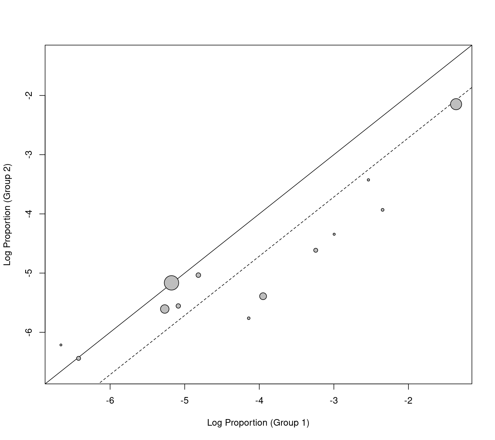

labbe.RdFunction to create L'Abbé plots for objects of class "rma".
labbe(x, ...) # S3 method for rma labbe(x, xlim, ylim, xlab, ylab, add=x$add, to=x$to, transf, targs, pch=21, psize, bg="gray", grid=FALSE, lty, ...)
| x | an object of class |
|---|---|
| xlim | x-axis limits. If unspecified, the function tries to set the x-axis limits to some sensible values. |
| ylim | y-axis limits. If unspecified, the function tries to set the y-axis limits to some sensible values. |
| xlab | title for the x-axis. If unspecified, the function tries to set an appropriate axis title. |
| ylab | title for the y-axis. If unspecified, the function tries to set an appropriate axis title. |
| add | See ‘Details’ and the documentation of the |
| to | See ‘Details’ and the documentation of the |
| transf | optional argument specifying the name of a function that should be used to transform the outcomes (e.g., |
| targs | optional arguments needed by the function specified under |
| pch | plotting symbol to use for the outcomes. By default, a filled circle is used. Can also be a vector of values. See |
| psize | optional vector with point sizes for the outcomes. If unspecified, the point sizes are an inverse function of the precision of the estimates. |
| bg | color to use for filling the plotting symbol (the default is |
| grid | logical indicating whether a grid should be added to the plot. |
| lty | optional character vector specifying the line type for the diagonal reference line of no effect and the line that indicates the estimated effect based on the fitted model (if unspecified, the function sets this to |
| ... | other arguments. |
The model specified via x must be a model without moderators (i.e., either a fixed- or a random-effects model) fitted with either the rma.uni, rma.mh, rma.peto, or rma.glmm function. Moreover, the model must be fitted with measure set equal to "RD" (for risk differences), "RR" (for risk ratios), "OR" (for odds ratios), "AS" (for arcsine square root transformed risk differences), "IRR" (for incidence rate ratios), "IRD" (for incidence rate differences), or "IRSD" (for square root transformed incidence rate differences).
The function calculates the arm-level outcomes for the two experimental groups (e.g., treatment and control groups) and plots them against each other. In particular, the function plots the raw proportions of the two groups against each other when analyzing risk differences, the log of the proportions when analyzing (log) risk ratios, the log odds when analyzing (log) odds ratios, the arcsine square root transformed proportions when analyzing arcsine square root transformed risk differences, the raw incidence rates when analyzing incidence rate differences, the log of the incidence rates when analyzing (log) incidence rate ratios, and the square root transformed incidence rates when analyzing square root transformed incidence rate differences. The transf argument can be used to transform these values (e.g., transf=exp to transform the log of the proportions back to raw proportions; see also transf).
As described under the documentation for the escalc function, zero cells can lead to problems when calculating particular outcomes. Adding a small constant to the cells of the \(2 \times 2\) tables is a common solution to this problem. By default, the functions adopts the same method for handling zero cells as was done when fitting the model.
By default (i.e., if psize is not specified), the size of the points is an inverse function of the precision (inverse standard errors) of the outcomes. The solid line corresponds to identical outcomes in the two groups (i.e., the absence of a difference between the two groups). The dashed line indicates the estimated effect based on the fitted model.
A data frame with components:
the x coordinates of the points that were plotted.
the y coordinates of the points that were plotted.
the point sizes.
L'Abbé, K. A., Detsky, A. S., & O'Rourke, K. (1987). Meta-analysis in clinical research. Annals of Internal Medicine, 107(2), 224--233. https://doi.org/10.7326/0003-4819-107-2-224
Viechtbauer, W. (2010). Conducting meta-analyses in R with the metafor package. Journal of Statistical Software, 36(3), 1--48. https://doi.org/10.18637/jss.v036.i03
### meta-analysis of the log risk ratios using a random-effects model res <- rma(measure="RR", ai=tpos, bi=tneg, ci=cpos, di=cneg, data=dat.bcg) ### default plot labbe(res)### funnel plot with risk values on the x- and y-axis labbe(res, transf=exp)